Machine Learning models applied.#
import pandas as pd
import numpy as np
import matplotlib.pyplot as plt
import seaborn as sns
import warnings
from sklearn.preprocessing import MinMaxScaler, LabelEncoder, OneHotEncoder, PowerTransformer
from sklearn.model_selection import train_test_split, GridSearchCV
from sklearn.neighbors import KNeighborsRegressor
from sklearn import neighbors
from sklearn.metrics import mean_absolute_error, mean_squared_error, mean_squared_log_error, r2_score, explained_variance_score
import scipy.stats as stats
from scipy.stats import kurtosis, boxcox
import mglearn
import matplotlib
warnings.filterwarnings('ignore')
df = pd.read_csv('C:/Users/elias/OneDrive/Desktop/MachineLearning/MLProject/Copia de DataBaseSGC.csv', delimiter=';', low_memory=False)
df
| Record Sequence Number | EQID | Epicenter Latitude (deg; positive N) | Epicenter Longitude (deg; positive E) | Hypocenter Depth (km) | Magnitude | Magnitude type | Tectonic environment (Crustal; Inslab; Interface; Stable; Deep; Volcanic; Oceanic_crust) | Nodal Plane 1 Strike (deg) | Nodal Plane 1 Dip (deg) | ... | Station Elevation (m) | Tmax | Valor_T1.5 | Repi_OpenQuake | Rjb_OpenQuake | Rrup_OpenQuake | Rx_OpenQuake | Rhypo_OpenQuake | Ry0_OpenQuake | T_0.01_RotD50 | |
|---|---|---|---|---|---|---|---|---|---|---|---|---|---|---|---|---|---|---|---|---|---|
| 0 | 73 | CO_20080524192044 | 4.374 | -73.708 | 14.7 | 5.8671 | Mw | Crustal | 196 | 82 | ... | 581.0 | 14 | 0.07 | 91.480436 | 85.352392 | 86.623229 | 5.748244 | 93.551751 | 85.165829 | 4.755494 |
| 1 | 74 | CO_20100729193445 | 3.907 | -75.097 | 33.1 | 5.0567 | Mw | Crustal | 37 | 54 | ... | 581.0 | 15 | 0.05 | 96.319115 | 93.725261 | 99.461616 | 8.545095 | 102.497369 | 93.435791 | 10.887828 |
| 2 | 76 | CO_19940913100134 | 7.105 | -76.665 | 14.0 | 6.0202 | Mw | Crustal | 4 | 64 | ... | 1472.0 | 2 | 0.09 | 180.238872 | 173.579980 | 174.684394 | 95.953705 | 181.353681 | 146.630792 | 4.847060 |
| 3 | 79 | CO_19961104172500 | 7.364 | -77.380 | 14.0 | 6.2562 | Mw | Crustal | 188 | 43 | ... | 1472.0 | 2 | 0.10 | 253.961289 | 244.155697 | 244.405678 | -188.792092 | 254.752031 | 154.796223 | 1.814338 |
| 4 | 84 | CO_19990125181918 | 4.445 | -75.659 | 17.0 | 6.1355 | Mw | Crustal | 8 | 65 | ... | 1472.0 | 3 | 0.07 | 139.662026 | 134.252237 | 135.354859 | -121.819668 | 141.709990 | 56.434882 | 9.462926 |
| ... | ... | ... | ... | ... | ... | ... | ... | ... | ... | ... | ... | ... | ... | ... | ... | ... | ... | ... | ... | ... | ... |
| 8806 | 8774 | CO_20190331072713 | -1.910 | -80.810 | 5.0 | 5.6000 | Mw | Interface | 337 | 24 | ... | 696.0 | 27 | 0.02 | 1236.021754 | 1230.674634 | 1230.049890 | 1178.334392 | 1236.043904 | 374.756057 | 0.004725 |
| 8807 | 8776 | CO_20190331140913 | -2.030 | -80.890 | 10.0 | 5.0181 | Mw | Interface | 354 | 21 | ... | 696.0 | 27 | 0.02 | 1253.442350 | 1249.197259 | 1248.234684 | 1023.671482 | 1253.495004 | 717.168683 | 0.003128 |
| 8808 | 8777 | CO_20190408032300 | -2.120 | -80.360 | 47.0 | 5.0304 | Mw | Interface | 334 | 31 | ... | 696.0 | 27 | 0.02 | 1216.435655 | 1213.141652 | 1209.579637 | 1162.208344 | 1217.416127 | 358.488368 | 0.003101 |
| 8809 | 8778 | CO_20190409113955 | 3.750 | -78.740 | 10.0 | 5.0266 | Mw | Interface | 26 | 32 | ... | 696.0 | 20 | 0.02 | 729.062638 | 725.469563 | 725.018483 | -469.472251 | 729.171353 | 552.584146 | 0.020313 |
| 8810 | 8809 | CO_20200117043206 | 2.120 | -79.560 | 20.0 | 4.7000 | Mw | Interface | 44 | 25 | ... | 696.0 | 40 | 0.02 | 876.174697 | 873.178545 | 872.100140 | -344.376016 | 876.453666 | 802.354454 | 0.007543 |
8811 rows × 30 columns
#df["T_0.01_RotD50"]= df["T_0.01_RotD50"]/980
df.describe().T
| count | mean | std | min | 25% | 50% | 75% | max | |
|---|---|---|---|---|---|---|---|---|
| Record Sequence Number | 8811.0 | 4406.000000 | 2543.660944 | 1.000000 | 2203.500000 | 4406.000000 | 6608.500000 | 8811.000000 |
| Epicenter Latitude (deg; positive N) | 8811.0 | 5.896834 | 3.759842 | -4.825000 | 3.440000 | 6.535500 | 7.280000 | 13.260000 |
| Epicenter Longitude (deg; positive E) | 8811.0 | -76.241968 | 2.851960 | -81.260000 | -78.290000 | -76.040000 | -73.280000 | -67.973000 |
| Hypocenter Depth (km) | 8811.0 | 59.993065 | 62.345192 | 1.000000 | 10.000000 | 19.600000 | 132.000000 | 209.900000 |
| Magnitude | 8811.0 | 4.988405 | 0.675945 | 3.800000 | 4.500000 | 4.900000 | 5.260000 | 7.782200 |
| Nodal Plane 1 Strike (deg) | 8811.0 | 177.660651 | 106.265249 | 2.000000 | 88.000000 | 168.000000 | 265.000000 | 360.000000 |
| Nodal Plane 1 Dip (deg) | 8811.0 | 58.328567 | 23.395038 | 1.000000 | 41.000000 | 65.000000 | 80.000000 | 90.000000 |
| Nodal Plane 1 Rake Angle (deg) | 8811.0 | 13.555783 | 109.983810 | -180.000000 | -69.000000 | 20.000000 | 107.000000 | 180.000000 |
| Nodal Plane 2 Strike (deg) | 8811.0 | 169.453978 | 108.282067 | 0.000000 | 71.000000 | 172.000000 | 258.000000 | 360.000000 |
| Nodal Plane 2 Dip (deg) | 8811.0 | 68.298604 | 16.069385 | 14.000000 | 58.000000 | 69.000000 | 82.000000 | 90.000000 |
| Nodal Plane 2 Rake Angle (deg) | 8811.0 | 18.638974 | 102.783054 | -180.000000 | -50.000000 | 18.000000 | 100.000000 | 177.000000 |
| Fault Plane (1; 2; X) | 8811.0 | 1.439905 | 0.496404 | 1.000000 | 1.000000 | 1.000000 | 2.000000 | 2.000000 |
| Station Latitude (deg positive N) | 8811.0 | 4.999047 | 2.937833 | -3.987000 | 2.722500 | 4.844900 | 6.591800 | 13.376000 |
| Station Longitude (deg positive E) | 8811.0 | -75.512635 | 1.873769 | -81.712000 | -76.665900 | -75.493800 | -74.224500 | -71.760600 |
| Station Elevation (m) | 8811.0 | 1192.790001 | 1107.902834 | 4.000000 | 234.000000 | 780.000000 | 1948.000000 | 4136.000000 |
| Tmax | 8811.0 | 15.733515 | 8.989414 | 2.000000 | 10.000000 | 16.000000 | 20.000000 | 80.000000 |
| Valor_T1.5 | 8811.0 | 0.072432 | 0.085694 | -1.000000 | 0.020000 | 0.050000 | 0.090000 | 2.000000 |
| Repi_OpenQuake | 8811.0 | 518.426071 | 358.748110 | 2.139510 | 244.607352 | 436.508318 | 718.623355 | 1814.891470 |
| Rjb_OpenQuake | 8811.0 | 515.086428 | 358.596816 | 0.000000 | 241.544866 | 433.488276 | 716.066555 | 1806.111669 |
| Rrup_OpenQuake | 8811.0 | 527.362790 | 348.174102 | 12.535892 | 255.148038 | 440.219130 | 717.411885 | 1804.589468 |
| Rx_OpenQuake | 8811.0 | -5.273488 | 417.646542 | -1630.754422 | -230.020199 | -6.139455 | 217.880928 | 1691.271485 |
| Rhypo_OpenQuake | 8811.0 | 532.622440 | 348.911089 | 15.963300 | 260.111942 | 445.929503 | 722.371197 | 1814.924143 |
| Ry0_OpenQuake | 8811.0 | 349.665005 | 313.100583 | 0.000000 | 109.331234 | 268.678543 | 490.908865 | 1727.496966 |
| T_0.01_RotD50 | 8811.0 | 2.929262 | 19.169845 | 0.000000 | 0.030424 | 0.148521 | 1.007054 | 874.803270 |
categorical_columns = df.select_dtypes(include=['object']).columns
categorical_columns
Index(['EQID', 'Magnitude type',
'Tectonic environment (Crustal; Inslab; Interface; Stable; Deep; Volcanic; Oceanic_crust)',
'Style-of-Faulting (S; R; N; U)', 'Station ID', 'Station Code'],
dtype='object')
df.drop(["Record Sequence Number"], axis=1, inplace=True)
df.drop(["Station ID"], axis=1, inplace=True)
df.drop(["Station Code"], axis=1, inplace=True)
df.drop(["Magnitude type"], axis=1, inplace=True)
df.drop(["EQID"], axis=1, inplace=True)
df.drop(["Valor_T1.5"], axis=1, inplace=True)
df.drop(["Tmax"], axis=1, inplace=True)
df.drop(["Epicenter Latitude (deg; positive N)"], axis=1, inplace=True)
df.drop(["Epicenter Longitude (deg; positive E)"], axis=1, inplace=True)
df.drop(["Station Latitude (deg positive N)"], axis=1, inplace=True)
df.drop(["Station Longitude (deg positive E)"], axis=1, inplace=True)
categorical_columns = df.select_dtypes(include=['object']).columns
categorical_columns
Index(['Tectonic environment (Crustal; Inslab; Interface; Stable; Deep; Volcanic; Oceanic_crust)', 'Style-of-Faulting (S; R; N; U)'], dtype='object')
df = df[df['T_0.01_RotD50'] > 0]
#df = df[df['T_0.01_RotD50'] > 0.0001]
df_copy = df.copy()
X= df_copy.copy()
df_copy["T_0.01_RotD50"]= np.log(df_copy["T_0.01_RotD50"])
df_copy.describe().T
| count | mean | std | min | 25% | 50% | 75% | max | |
|---|---|---|---|---|---|---|---|---|
| Hypocenter Depth (km) | 8809.0 | 60.004416 | 62.347718 | 1.000000 | 10.000000 | 20.000000 | 132.000000 | 209.900000 |
| Magnitude | 8809.0 | 4.988410 | 0.676019 | 3.800000 | 4.500000 | 4.900000 | 5.260000 | 7.782200 |
| Nodal Plane 1 Strike (deg) | 8809.0 | 177.646838 | 106.261691 | 2.000000 | 88.000000 | 168.000000 | 265.000000 | 360.000000 |
| Nodal Plane 1 Dip (deg) | 8809.0 | 58.327165 | 23.395052 | 1.000000 | 41.000000 | 65.000000 | 80.000000 | 90.000000 |
| Nodal Plane 1 Rake Angle (deg) | 8809.0 | 13.527075 | 109.978298 | -180.000000 | -69.000000 | 20.000000 | 107.000000 | 180.000000 |
| Nodal Plane 2 Strike (deg) | 8809.0 | 169.450335 | 108.280821 | 0.000000 | 71.000000 | 172.000000 | 258.000000 | 360.000000 |
| Nodal Plane 2 Dip (deg) | 8809.0 | 68.298558 | 16.068522 | 14.000000 | 58.000000 | 69.000000 | 82.000000 | 90.000000 |
| Nodal Plane 2 Rake Angle (deg) | 8809.0 | 18.633897 | 102.792576 | -180.000000 | -50.000000 | 18.000000 | 100.000000 | 177.000000 |
| Fault Plane (1; 2; X) | 8809.0 | 1.440005 | 0.496416 | 1.000000 | 1.000000 | 1.000000 | 2.000000 | 2.000000 |
| Station Elevation (m) | 8809.0 | 1192.927767 | 1107.990874 | 4.000000 | 234.000000 | 780.000000 | 1948.000000 | 4136.000000 |
| Repi_OpenQuake | 8809.0 | 518.287674 | 358.644620 | 2.139510 | 244.547715 | 436.488453 | 718.121614 | 1814.891470 |
| Rjb_OpenQuake | 8809.0 | 514.948161 | 358.493624 | 0.000000 | 241.541484 | 433.272980 | 715.996061 | 1806.111669 |
| Rrup_OpenQuake | 8809.0 | 527.227522 | 348.070661 | 12.535892 | 255.135433 | 440.193666 | 717.137495 | 1804.589468 |
| Rx_OpenQuake | 8809.0 | -5.348640 | 417.649621 | -1630.754422 | -230.031669 | -6.358898 | 217.860098 | 1691.271485 |
| Rhypo_OpenQuake | 8809.0 | 532.487252 | 348.807960 | 15.963300 | 260.105496 | 445.814200 | 722.325946 | 1814.924143 |
| Ry0_OpenQuake | 8809.0 | 349.513260 | 312.917566 | 0.000000 | 109.324233 | 268.673176 | 490.453078 | 1727.496966 |
| T_0.01_RotD50 | 8809.0 | -1.670185 | 2.332732 | -12.366241 | -3.491755 | -1.905817 | 0.007283 | 6.773999 |
Y=X[["T_0.01_RotD50"]].copy()
X.drop(["T_0.01_RotD50"],axis=1, inplace=True )
df_numerico = df_copy.select_dtypes(include=[float, int])
from sklearn.preprocessing import StandardScaler
from statsmodels.stats.outliers_influence import variance_inflation_factor
# Estandarizar datos
scaler_X = MinMaxScaler()
scaler_y = MinMaxScaler()
df_numerico.drop(["Fault Plane (1; 2; X)"], axis=1, inplace=True) #Se va a codificar dsp.
# Escalar las variables predictoras
df_scaled = pd.DataFrame(scaler_X.fit_transform(df_numerico.drop("T_0.01_RotD50", axis=1)),
columns=df_numerico.drop("T_0.01_RotD50", axis=1).columns)
# Escalar la variable de respuesta
Aceleracion_escalada = scaler_y.fit_transform(df_numerico[["T_0.01_RotD50"]]) # Debe ser 2D
df_scaled["T_0.01_RotD50"] = Aceleracion_escalada.flatten()
df_scaled
| Hypocenter Depth (km) | Magnitude | Nodal Plane 1 Strike (deg) | Nodal Plane 1 Dip (deg) | Nodal Plane 1 Rake Angle (deg) | Nodal Plane 2 Strike (deg) | Nodal Plane 2 Dip (deg) | Nodal Plane 2 Rake Angle (deg) | Station Elevation (m) | Repi_OpenQuake | Rjb_OpenQuake | Rrup_OpenQuake | Rx_OpenQuake | Rhypo_OpenQuake | Ry0_OpenQuake | T_0.01_RotD50 | |
|---|---|---|---|---|---|---|---|---|---|---|---|---|---|---|---|---|
| 0 | 0.065582 | 0.519085 | 0.541899 | 0.910112 | 0.002778 | 0.294444 | 0.986842 | 0.481793 | 0.139642 | 0.049285 | 0.047258 | 0.041342 | 0.492622 | 0.043130 | 0.049300 | 0.727553 |
| 1 | 0.153662 | 0.315579 | 0.097765 | 0.595506 | 0.883333 | 0.430556 | 0.565789 | 0.630252 | 0.139642 | 0.051954 | 0.051893 | 0.048506 | 0.493464 | 0.048102 | 0.054087 | 0.770831 |
| 2 | 0.062231 | 0.557531 | 0.005587 | 0.707865 | 0.525000 | 0.750000 | 0.894737 | 0.932773 | 0.355276 | 0.098248 | 0.096107 | 0.090482 | 0.519776 | 0.091937 | 0.084880 | 0.728550 |
| 3 | 0.062231 | 0.616795 | 0.519553 | 0.471910 | 0.616667 | 0.177778 | 0.644737 | 0.851541 | 0.355276 | 0.138917 | 0.135183 | 0.129388 | 0.434061 | 0.132737 | 0.089607 | 0.677210 |
| 4 | 0.076592 | 0.586485 | 0.016760 | 0.719101 | 0.441667 | 0.297222 | 0.750000 | 0.075630 | 0.355276 | 0.075864 | 0.074332 | 0.068535 | 0.454221 | 0.069900 | 0.032669 | 0.763503 |
| ... | ... | ... | ... | ... | ... | ... | ... | ... | ... | ... | ... | ... | ... | ... | ... | ... |
| 8804 | 0.019148 | 0.452011 | 0.935754 | 0.258427 | 0.655556 | 0.536111 | 0.736842 | 0.795518 | 0.167473 | 0.680668 | 0.681395 | 0.679396 | 0.845595 | 0.678214 | 0.216936 | 0.366315 |
| 8805 | 0.043083 | 0.305886 | 0.983240 | 0.224719 | 0.744444 | 0.488889 | 0.723684 | 0.759104 | 0.167473 | 0.690278 | 0.691650 | 0.689543 | 0.799038 | 0.687915 | 0.415149 | 0.344772 |
| 8806 | 0.220201 | 0.308975 | 0.927374 | 0.337079 | 0.708333 | 0.477778 | 0.605263 | 0.781513 | 0.167473 | 0.669863 | 0.671687 | 0.667973 | 0.840741 | 0.667859 | 0.207519 | 0.344306 |
| 8807 | 0.043083 | 0.308021 | 0.067039 | 0.348315 | 0.227778 | 0.597222 | 0.578947 | 0.266106 | 0.167473 | 0.401005 | 0.401675 | 0.397579 | 0.349570 | 0.396456 | 0.319876 | 0.442509 |
| 8808 | 0.090953 | 0.226006 | 0.117318 | 0.269663 | 0.255556 | 0.616667 | 0.671053 | 0.249300 | 0.167473 | 0.482159 | 0.483458 | 0.479653 | 0.387227 | 0.478326 | 0.464461 | 0.390752 |
8809 rows × 16 columns
df_scaled.drop(["Nodal Plane 1 Rake Angle (deg)"], axis=1, inplace=True)
df_scaled.drop(["Nodal Plane 2 Rake Angle (deg)"], axis=1, inplace=True)
df_scaled.drop(["Nodal Plane 2 Dip (deg)"], axis=1, inplace=True)
df_scaled.drop(["Nodal Plane 2 Strike (deg)"], axis=1, inplace=True)
df_scaled.drop(["Rx_OpenQuake"], axis=1, inplace=True)
df_scaled.drop(["Ry0_OpenQuake"], axis=1, inplace=True)
df_scaled.drop(["Rhypo_OpenQuake"], axis=1, inplace=True)
df_scaled.drop(["Rrup_OpenQuake"], axis=1, inplace=True)
df_scaled.drop(["Repi_OpenQuake"], axis=1, inplace=True)
# Codificar la variable categórica con OneHotEncoder
X_categorical = df_copy[['Tectonic environment (Crustal; Inslab; Interface; Stable; Deep; Volcanic; Oceanic_crust)']].astype(str)
enc = OneHotEncoder(sparse_output=False)
X_encoded = enc.fit_transform(X_categorical) # Devuelve un array listo para KNN
Y_categorical = df_copy[["Fault Plane (1; 2; X)"]].astype(str)
enc = OneHotEncoder(sparse_output=False)
Y_encoded = enc.fit_transform(Y_categorical)
Z_categorical = df_copy[["Style-of-Faulting (S; R; N; U)"]].astype(str)
enc = OneHotEncoder(sparse_output=False)
Z_encoded = enc.fit_transform(Z_categorical)
X_numerical = df_scaled.drop(columns=["T_0.01_RotD50"]).values
# Paso 3: Combinar características numéricas y codificadas
X_final = np.hstack((X_numerical, X_encoded,Y_encoded,Z_encoded))
y = df_scaled["T_0.01_RotD50"].values
X_train, X_test, y_train, y_test = train_test_split(X_final, y, test_size=0.3, random_state=0)
df_scaled.describe().T
| count | mean | std | min | 25% | 50% | 75% | max | |
|---|---|---|---|---|---|---|---|---|
| Hypocenter Depth (km) | 8809.0 | 0.282453 | 0.298457 | 0.0 | 0.043083 | 0.090953 | 0.627094 | 1.0 |
| Magnitude | 8809.0 | 0.298430 | 0.169760 | 0.0 | 0.175782 | 0.276229 | 0.366632 | 1.0 |
| Nodal Plane 1 Strike (deg) | 8809.0 | 0.490634 | 0.296820 | 0.0 | 0.240223 | 0.463687 | 0.734637 | 1.0 |
| Nodal Plane 1 Dip (deg) | 8809.0 | 0.644125 | 0.262866 | 0.0 | 0.449438 | 0.719101 | 0.887640 | 1.0 |
| Station Elevation (m) | 8809.0 | 0.287737 | 0.268149 | 0.0 | 0.055663 | 0.187803 | 0.470474 | 1.0 |
| Rjb_OpenQuake | 8809.0 | 0.285114 | 0.198489 | 0.0 | 0.133736 | 0.239893 | 0.396430 | 1.0 |
| T_0.01_RotD50 | 8809.0 | 0.558826 | 0.121876 | 0.0 | 0.463656 | 0.546515 | 0.646467 | 1.0 |
KNN Neighbors#
rmsle_val = []
best_rmsle = 1.0
for k in range(20):
k = k+1
knn = neighbors.KNeighborsRegressor(n_neighbors = k)
knn.fit(X_train, y_train)
y_pred = knn.predict(X_test)
rmsle = np.sqrt(mean_squared_log_error(y_test,y_pred))
if (rmsle < best_rmsle):
best_rmsle = rmsle
best_k = k
rmsle_val.append(rmsle)
print('RMSLE value for k= ' , k , 'is:', rmsle)
print(f"Best RMSLE: {best_rmsle}, Best k: {best_k}")
RMSLE value for k= 1 is: 0.06005773372163746
RMSLE value for k= 2 is: 0.05273028011427126
RMSLE value for k= 3 is: 0.05069096387713046
RMSLE value for k= 4 is: 0.05002811703487074
RMSLE value for k= 5 is: 0.04979390092687302
RMSLE value for k= 6 is: 0.04957760399255021
RMSLE value for k= 7 is: 0.049729983536906865
RMSLE value for k= 8 is: 0.04991960513895237
RMSLE value for k= 9 is: 0.04994076592695761
RMSLE value for k= 10 is: 0.04986555144305401
RMSLE value for k= 11 is: 0.049979941842826066
RMSLE value for k= 12 is: 0.050245781394172656
RMSLE value for k= 13 is: 0.05037333725279992
RMSLE value for k= 14 is: 0.050514539534696146
RMSLE value for k= 15 is: 0.050671469112569825
RMSLE value for k= 16 is: 0.0508016015489221
RMSLE value for k= 17 is: 0.051085374567843705
RMSLE value for k= 18 is: 0.051199319984865585
RMSLE value for k= 19 is: 0.05142993155194781
RMSLE value for k= 20 is: 0.05169296506300189
Best RMSLE: 0.04957760399255021, Best k: 6
sns.set_style("darkgrid")
curve = pd.DataFrame(rmsle_val)
curve.plot(figsize=(8,5));
#plt.style.use("bmh")
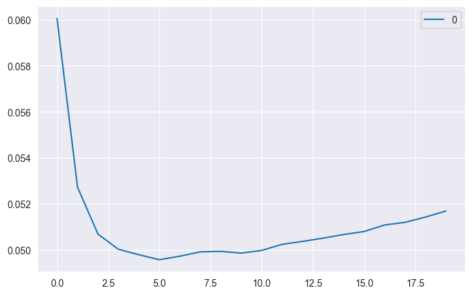
knn = neighbors.KNeighborsRegressor(n_neighbors = best_k)
knn.fit(X_train,y_train)
y_pred_knn = knn.predict(X_test)
print("Puntaje test: ",knn.score(X_test, y_test))
print("Puntaje train: ",knn.score(X_train, y_train))
y_predtotal=knn.predict(X_final)
puntajetotal=knn.score(X_final,y)
print("Puntaje conjunto total: ", puntajetotal)
Puntaje test: 0.6096901738670664
Puntaje train: 0.7223975517089001
Puntaje conjunto total: 0.6885088648369043
# Ordenar los valores reales y mantener la relación con los predichos
sorted_indices_test = np.argsort(y_test) # Obtener los índices ordenados de y_test
y_test_sorted = y_test[sorted_indices_test] # Ordenar los valores reales
sorted_indices_pred = np.argsort(y_pred)
y_pred_sorted = y_pred[sorted_indices_pred] # Reordenar las predicciones según esos índices
"""
fig, axs = plt.subplots(4, 1, figsize=(20, 15), sharex=True)
# --- Subplot 1: Datos de 0 a 550 ---
axs[0].plot(y_test_sorted[2:550], label="Real", marker="o", linestyle="-", color="blue", markersize=0.1, linewidth=1)
axs[0].plot(y_pred_sorted[2:550], label="Predicho", marker="x", linestyle="--", color="red", markersize=0.1, linewidth=1)
axs[0].set_ylabel("Valor")
axs[0].set_title("Valores Reales vs. Predichos (0 - 600)")
axs[0].legend()
axs[0].grid()
# --- Subplot 2: Datos de 550 a 1100 ---
axs[1].plot(y_test_sorted[550:1100], label="Real", marker="o", linestyle="-", color="blue", markersize=0.1, linewidth=1)
axs[1].plot(y_pred_sorted[550:1100], label="Predicho", marker="x", linestyle="--", color="red", markersize=0.1, linewidth=1)
axs[1].set_xlabel("Índice")
axs[1].set_ylabel("Valor")
axs[1].set_title("Valores Reales vs. Predichos (600 - 1200)")
axs[1].legend()
axs[1].grid()
# --- Subplot 3: Datos de 1100 a 1650 ---
axs[2].plot(y_test_sorted[1100:1650], label="Real", marker="o", linestyle="-", color="blue", markersize=0.1, linewidth=1)
axs[2].plot(y_pred_sorted[1100:1650], label="Predicho", marker="x", linestyle="--", color="red", markersize=0.1, linewidth=1)
axs[2].set_xlabel("Índice")
axs[2].set_ylabel("Valor")
axs[2].set_title("Valores Reales vs. Predichos (1200 - 1800)")
axs[2].legend()
axs[2].grid()
# --- Subplot 4: Datos de 1650 a 2300 ---
axs[3].plot(y_test_sorted[1650:2300], label="Real", marker="o", linestyle="-", color="blue", markersize=0.1, linewidth=1)
axs[3].plot(y_pred_sorted[1650:2300], label="Predicho", marker="x", linestyle="--", color="red", markersize=0.1, linewidth=1)
axs[3].set_xlabel("Índice")
axs[3].set_ylabel("Valor")
axs[3].set_title("Valores Reales vs. Predichos (1800 - 2400)")
axs[3].legend()
axs[3].grid()
# Ajustar los espacios entre subgráficos automáticamente
plt.tight_layout()
plt.show()
"""
'\n\nfig, axs = plt.subplots(4, 1, figsize=(20, 15), sharex=True)\n\n# --- Subplot 1: Datos de 0 a 550 ---\naxs[0].plot(y_test_sorted[2:550], label="Real", marker="o", linestyle="-", color="blue", markersize=0.1, linewidth=1)\naxs[0].plot(y_pred_sorted[2:550], label="Predicho", marker="x", linestyle="--", color="red", markersize=0.1, linewidth=1)\naxs[0].set_ylabel("Valor")\naxs[0].set_title("Valores Reales vs. Predichos (0 - 600)")\naxs[0].legend()\naxs[0].grid()\n\n# --- Subplot 2: Datos de 550 a 1100 ---\naxs[1].plot(y_test_sorted[550:1100], label="Real", marker="o", linestyle="-", color="blue", markersize=0.1, linewidth=1)\naxs[1].plot(y_pred_sorted[550:1100], label="Predicho", marker="x", linestyle="--", color="red", markersize=0.1, linewidth=1)\naxs[1].set_xlabel("Índice")\naxs[1].set_ylabel("Valor")\naxs[1].set_title("Valores Reales vs. Predichos (600 - 1200)")\naxs[1].legend()\naxs[1].grid()\n\n# --- Subplot 3: Datos de 1100 a 1650 ---\naxs[2].plot(y_test_sorted[1100:1650], label="Real", marker="o", linestyle="-", color="blue", markersize=0.1, linewidth=1)\naxs[2].plot(y_pred_sorted[1100:1650], label="Predicho", marker="x", linestyle="--", color="red", markersize=0.1, linewidth=1)\naxs[2].set_xlabel("Índice")\naxs[2].set_ylabel("Valor")\naxs[2].set_title("Valores Reales vs. Predichos (1200 - 1800)")\naxs[2].legend()\naxs[2].grid()\n\n# --- Subplot 4: Datos de 1650 a 2300 ---\naxs[3].plot(y_test_sorted[1650:2300], label="Real", marker="o", linestyle="-", color="blue", markersize=0.1, linewidth=1)\naxs[3].plot(y_pred_sorted[1650:2300], label="Predicho", marker="x", linestyle="--", color="red", markersize=0.1, linewidth=1)\naxs[3].set_xlabel("Índice")\naxs[3].set_ylabel("Valor")\naxs[3].set_title("Valores Reales vs. Predichos (1800 - 2400)")\naxs[3].legend()\naxs[3].grid()\n\n# Ajustar los espacios entre subgráficos automáticamente\nplt.tight_layout()\nplt.show()\n'
plt.figure(figsize=(10,5))
# Graficar datos reales y predichos
plt.plot(y_test_sorted[2:2500], label="Real", marker="o", linestyle="-", color="blue", markersize=0.1, linewidth=1, alpha=0.7)
plt.plot(y_pred_sorted[2:2500], label="Predicho", marker="x", linestyle="--", color="red", markersize=0.1, linewidth=1, alpha=0.7)
plt.legend(["Real", "Predicho"])
plt.grid(True, linestyle='--', alpha=0.6)
plt.tight_layout()
plt.show()
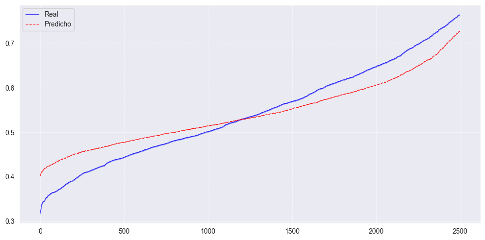
y_test_unscaled = scaler_y.inverse_transform(y_test.reshape(-1, 1)).flatten()
y_pred_unscaled = scaler_y.inverse_transform(y_pred.reshape(-1, 1)).flatten()
y_test_original = np.exp(y_test_unscaled)
y_pred_original = np.exp(y_pred_unscaled)
residuos = y_test_unscaled - y_pred_unscaled # Diferencia entre valores logaritmicos reales y predichos
residuosreales = y_test_original - y_pred_original
plt.figure(figsize=(10,4))
sns.boxplot(x=residuos, orient="h", color="red")
plt.axhline(y=0, color="black", linestyle="--", linewidth=1) # Línea en y=0
plt.ylabel("Error (Residuo)")
plt.title("Boxplot de los residuos para conjunto de prueba")
plt.show()
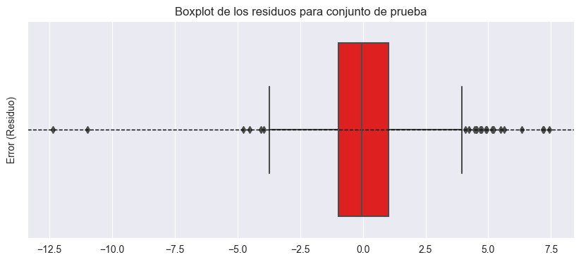
ylogreal = scaler_y.inverse_transform(y.reshape(-1, 1)).flatten()
ylogpred= scaler_y.inverse_transform(y_predtotal.reshape(-1, 1)).flatten()
residuos_log = ylogpred-ylogreal
yREAL = np.exp(ylogreal)
ypredREAL = np.exp(ylogpred)
residuos_totales = yREAL - ypredREAL
fig, axes = plt.subplots(2, 1, figsize=(10, 5))
sns.boxplot(x=residuos_log, orient="h", color="red", ax=axes[0])
axes[0].axhline(y=0, color="black", linestyle="--", linewidth=1)
axes[0].set_ylabel("Error (Residuo)")
axes[0].set_title("Boxplot de los residuos (log) para el conjunto total")
sns.boxplot(x=residuos_totales, orient="h", color="red", ax=axes[1])
axes[1].axhline(y=0, color="black", linestyle="--", linewidth=1)
axes[1].set_ylabel("Error (Residuo)")
axes[1].set_title("Boxplot de los residuos (real) para el conjunto total")
plt.tight_layout()
plt.show()
reKNN = pd.DataFrame({
'Residuo Log': residuos_log,
'Residuo Totales': residuos_totales
})
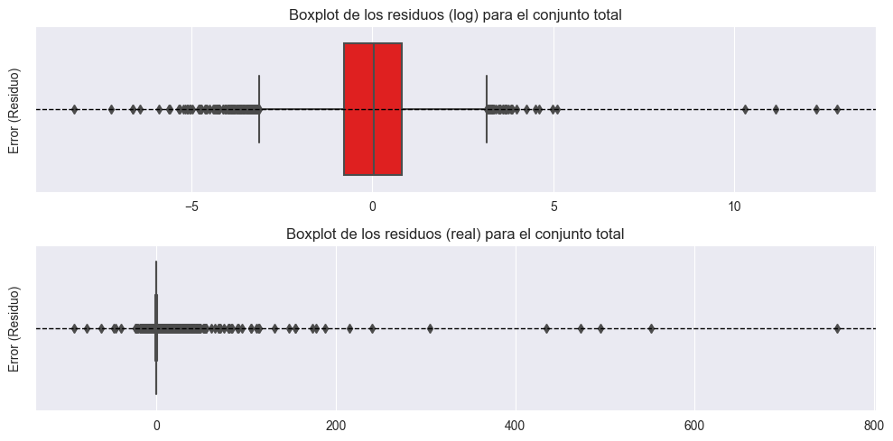
reKNN.describe()
| Residuo Log | Residuo Totales | |
|---|---|---|
| count | 8809.000000 | 8809.000000 |
| mean | -0.017927 | 1.423989 |
| std | 1.301807 | 16.024048 |
| min | -8.255347 | -91.896531 |
| 25% | -0.773724 | -0.057206 |
| 50% | 0.044688 | -0.002056 |
| 75% | 0.801656 | 0.250743 |
| max | 12.850586 | 759.066624 |
Regresiones#
# Estandarizar datos
scaler_XRidge = MinMaxScaler()
scaler_yRidge = MinMaxScaler()
#df_numerico.drop(["Fault Plane (1; 2; X)"], axis=1, inplace=True) #Se va a codificar dsp.
# Escalar las variables predictoras
df_scaledRidge = pd.DataFrame(scaler_XRidge.fit_transform(df_numerico.drop("T_0.01_RotD50", axis=1)),
columns=df_numerico.drop("T_0.01_RotD50", axis=1).columns)
# Escalar la variable de respuesta
Aceleracion_escalada = scaler_yRidge.fit_transform(df_numerico[["T_0.01_RotD50"]]) # Debe ser 2D
df_scaledRidge["T_0.01_RotD50"] = Aceleracion_escalada.flatten()
df_scaledRidge
| Hypocenter Depth (km) | Magnitude | Nodal Plane 1 Strike (deg) | Nodal Plane 1 Dip (deg) | Nodal Plane 1 Rake Angle (deg) | Nodal Plane 2 Strike (deg) | Nodal Plane 2 Dip (deg) | Nodal Plane 2 Rake Angle (deg) | Station Elevation (m) | Repi_OpenQuake | Rjb_OpenQuake | Rrup_OpenQuake | Rx_OpenQuake | Rhypo_OpenQuake | Ry0_OpenQuake | T_0.01_RotD50 | |
|---|---|---|---|---|---|---|---|---|---|---|---|---|---|---|---|---|
| 0 | 0.065582 | 0.519085 | 0.541899 | 0.910112 | 0.002778 | 0.294444 | 0.986842 | 0.481793 | 0.139642 | 0.049285 | 0.047258 | 0.041342 | 0.492622 | 0.043130 | 0.049300 | 0.727553 |
| 1 | 0.153662 | 0.315579 | 0.097765 | 0.595506 | 0.883333 | 0.430556 | 0.565789 | 0.630252 | 0.139642 | 0.051954 | 0.051893 | 0.048506 | 0.493464 | 0.048102 | 0.054087 | 0.770831 |
| 2 | 0.062231 | 0.557531 | 0.005587 | 0.707865 | 0.525000 | 0.750000 | 0.894737 | 0.932773 | 0.355276 | 0.098248 | 0.096107 | 0.090482 | 0.519776 | 0.091937 | 0.084880 | 0.728550 |
| 3 | 0.062231 | 0.616795 | 0.519553 | 0.471910 | 0.616667 | 0.177778 | 0.644737 | 0.851541 | 0.355276 | 0.138917 | 0.135183 | 0.129388 | 0.434061 | 0.132737 | 0.089607 | 0.677210 |
| 4 | 0.076592 | 0.586485 | 0.016760 | 0.719101 | 0.441667 | 0.297222 | 0.750000 | 0.075630 | 0.355276 | 0.075864 | 0.074332 | 0.068535 | 0.454221 | 0.069900 | 0.032669 | 0.763503 |
| ... | ... | ... | ... | ... | ... | ... | ... | ... | ... | ... | ... | ... | ... | ... | ... | ... |
| 8804 | 0.019148 | 0.452011 | 0.935754 | 0.258427 | 0.655556 | 0.536111 | 0.736842 | 0.795518 | 0.167473 | 0.680668 | 0.681395 | 0.679396 | 0.845595 | 0.678214 | 0.216936 | 0.366315 |
| 8805 | 0.043083 | 0.305886 | 0.983240 | 0.224719 | 0.744444 | 0.488889 | 0.723684 | 0.759104 | 0.167473 | 0.690278 | 0.691650 | 0.689543 | 0.799038 | 0.687915 | 0.415149 | 0.344772 |
| 8806 | 0.220201 | 0.308975 | 0.927374 | 0.337079 | 0.708333 | 0.477778 | 0.605263 | 0.781513 | 0.167473 | 0.669863 | 0.671687 | 0.667973 | 0.840741 | 0.667859 | 0.207519 | 0.344306 |
| 8807 | 0.043083 | 0.308021 | 0.067039 | 0.348315 | 0.227778 | 0.597222 | 0.578947 | 0.266106 | 0.167473 | 0.401005 | 0.401675 | 0.397579 | 0.349570 | 0.396456 | 0.319876 | 0.442509 |
| 8808 | 0.090953 | 0.226006 | 0.117318 | 0.269663 | 0.255556 | 0.616667 | 0.671053 | 0.249300 | 0.167473 | 0.482159 | 0.483458 | 0.479653 | 0.387227 | 0.478326 | 0.464461 | 0.390752 |
8809 rows × 16 columns
X_numericalRidge = df_scaledRidge.drop(columns=["T_0.01_RotD50"]).values
yRidge = df_scaledRidge["T_0.01_RotD50"].values
# Paso 3: Combinar características numéricas y codificadas
X_finalRidge = np.hstack((X_numericalRidge, X_encoded,Y_encoded,Z_encoded))
X_trainRidge, X_testRidge, y_trainRidge, y_testRidge = train_test_split(X_finalRidge, yRidge, test_size=0.3, random_state=0)
Regresión Lineal estándar#
from sklearn.linear_model import LinearRegression
from sklearn.model_selection import train_test_split
lr = LinearRegression().fit(X_trainRidge, y_trainRidge)
y_pred_reglineal = lr.predict(X_testRidge)
print("lr.coef_: {}".format(lr.coef_))
print("lr.intercept_: {}".format(lr.intercept_))
lr.coef_: [-8.09360030e-02 2.18612201e-01 -1.20543608e-03 -7.81037165e-03
-7.82133358e-03 -9.03044103e-03 4.16525707e-03 -5.01911585e-03
-2.89163843e-03 5.71764057e+00 -7.72824249e+00 2.40714995e+00
-1.95166568e-02 -7.30661430e-01 3.58547444e-03 -1.24516585e-03
3.80437516e-02 2.15882815e-03 -3.89574139e-02 -1.41786322e-04
1.41786323e-04 -8.74719999e-03 2.89704269e-03 5.85015729e-03]
lr.intercept_: 0.6264562929231874
print("Training set score: {:.2f}".format(lr.score(X_trainRidge, y_trainRidge)))
print("Test set score: {:.2f}".format(lr.score(X_testRidge, y_testRidge)))
Training set score: 0.54
Test set score: 0.51
sorted_indices_pred = np.argsort(y_pred_reglineal)
y_pred_sorted_reglineal = y_pred_reglineal[sorted_indices_pred] # Reordenar las predicciones según esos índices
plt.figure(figsize=(10,5))
# Graficar datos reales y predichos
plt.plot(y_test_sorted[2:2500], label="Real", marker="o", linestyle="-", color="blue", markersize=0.1, linewidth=1, alpha=0.7)
plt.plot(y_pred_sorted_reglineal[2:2500], label="Predicho", marker="x", linestyle="--", color="red", markersize=0.1, linewidth=1, alpha=0.7)
plt.legend(["Real", "Predicho"])
plt.grid(True, linestyle='--', alpha=0.6)
plt.tight_layout()
plt.show()
Regresión Ridge#
from sklearn.linear_model import Ridge
ridge = Ridge(alpha=10).fit(X_trainRidge, y_trainRidge)
print("Training set score: {:.2f}".format(ridge.score(X_trainRidge, y_trainRidge)))
print("Test set score: {:.2f}".format(ridge.score(X_testRidge, y_testRidge)))
Training set score: 0.51
Test set score: 0.48
y_pred_Ridge = ridge.predict(X_testRidge)
sorted_indices_predRidge = np.argsort(y_pred_Ridge)
y_pred_sorted_Ridge = y_pred_Ridge[sorted_indices_predRidge] # Reordenar las predicciones según esos índices
plt.figure(figsize=(10,5))
# Graficar datos reales y predichos
plt.plot(y_test_sorted[2:2500], label="Real", marker="o", linestyle="-", color="blue", markersize=0.1, linewidth=1, alpha=0.7)
plt.plot(y_pred_sorted_Ridge[2:2500], label="Predicho", marker="x", linestyle="--", color="red", markersize=0.1, linewidth=1, alpha=0.7)
plt.legend(["Real", "Predicho"])
plt.grid(True, linestyle='--', alpha=0.6)
plt.tight_layout()
plt.show()
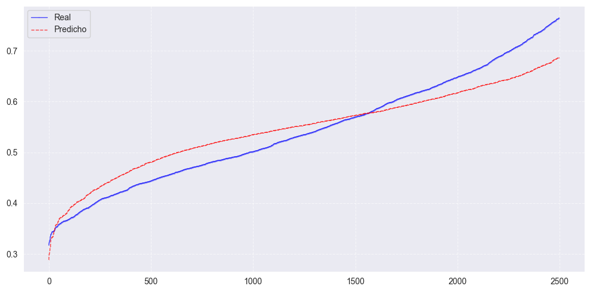
Regresión Lasso#
from sklearn.linear_model import Lasso
lasso = Lasso().fit(X_train, y_train)
print("Training set score: {:.2f}".format(lasso.score(X_train, y_train)))
print("Test set score: {:.2f}".format(lasso.score(X_test, y_test)))
print("Number of features used: {}".format(np.sum(lasso.coef_ != 0)))
Training set score: 0.00
Test set score: -0.00
Number of features used: 0
lasso001 = Lasso(alpha=0.001, max_iter=10000000).fit(X_train, y_train)
print("Training set score: {:.2f}".format(lasso001.score(X_train, y_train)))
print("Test set score: {:.2f}".format(lasso001.score(X_test, y_test)))
print("Number of features used: {}".format(np.sum(lasso001.coef_ != 0)))
Training set score: 0.51
Test set score: 0.47
Number of features used: 6
y_pred_Lasso= lasso001.predict(X_test)
sorted_indices_predLasso = np.argsort(y_pred_Lasso)
y_pred_sorted_Lasso = y_pred_Lasso[sorted_indices_predLasso] # Reordenar las predicciones según esos índices
plt.figure(figsize=(10,5))
# Graficar datos reales y predichos
plt.plot(y_test_sorted[2:2500], label="Real", marker="o", linestyle="-", color="blue", markersize=0.1, linewidth=1, alpha=0.7)
plt.plot(y_pred_sorted_Lasso[2:2500], label="Predicho", marker="x", linestyle="--", color="red", markersize=0.1, linewidth=1, alpha=0.7)
plt.legend(["Real", "Predicho"])
plt.grid(True, linestyle='--', alpha=0.6)
plt.tight_layout()
plt.show()
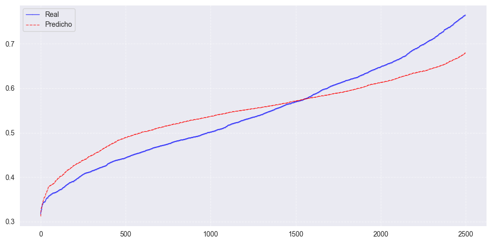
Árboles de decisión#
Random Forest#
from sklearn.ensemble import RandomForestRegressor
from sklearn.datasets import make_regression
X_trainRAND, X_testRAND, y_trainRAND, y_testRAND = train_test_split(X_finalRidge, yRidge, test_size=0.3, random_state=0,)
randforreg = RandomForestRegressor(n_estimators=100, criterion='squared_error', max_depth=7, min_samples_split=2, min_samples_leaf=1,
min_weight_fraction_leaf=0.0, max_features=1.0, max_leaf_nodes=None, min_impurity_decrease=0.0, bootstrap=True,
oob_score=False, n_jobs=None, random_state=0, verbose=0, warm_start=False, ccp_alpha=0.0, max_samples=None,
monotonic_cst=None)
from sklearn.model_selection import GridSearchCV
param_grid = {
'min_samples_split': [2, 5, 10, 20], # Valores más altos = menos splits
'min_samples_leaf': [1, 2, 4, 8], # Valores altos = más generalización
}
grid = GridSearchCV(randforreg, param_grid, scoring='r2', cv=3, n_jobs=7)
grid.fit(X_trainRAND, y_trainRAND)
print("Mejores parámetros:", grid.best_params_)
randforreg.fit(X_trainRAND, y_trainRAND)
RandomForestRegressor(max_depth=7, random_state=0)In a Jupyter environment, please rerun this cell to show the HTML representation or trust the notebook.
On GitHub, the HTML representation is unable to render, please try loading this page with nbviewer.org.
RandomForestRegressor(max_depth=7, random_state=0)
y_predRAND = randforreg.predict(X_testRAND)
print("Training set score: {:.2f}".format(randforreg.score(X_trainRAND, y_trainRAND)))
print("Test set score: {:.2f}".format(randforreg.score(X_testRAND, y_testRAND)))
print("Total score: {:.2f}".format(randforreg.score(X_finalRidge, yRidge)))
Training set score: 0.76
Test set score: 0.71
Total score: 0.74
ylogrealRANDOM = scaler_y.inverse_transform(y_testRAND.reshape(-1, 1)).flatten()
ylogpredRANDOM= scaler_y.inverse_transform(y_predRAND.reshape(-1, 1)).flatten()
residuos_logRANDOM = ylogpredRANDOM-ylogrealRANDOM
yREALRANDOM = np.exp(ylogrealRANDOM)
ypredREALRANDOM = np.exp(ylogpredRANDOM)
residuos_totalesRANDOM = yREALRANDOM - ypredREALRANDOM
residuosRANDOM = y_test_unscaled - y_pred_unscaled # Diferencia entre valores logaritmicos reales y predichos
residuosrealesRANDOM = y_test_original - y_pred_original
fig, axes = plt.subplots(2, 1, figsize=(10, 5))
sns.boxplot(x=residuos_logRANDOM, orient="h", color="red", ax=axes[0])
axes[0].axhline(y=0, color="black", linestyle="--", linewidth=1)
axes[0].set_ylabel("Error (Residuo)")
axes[0].set_title("Boxplot de los residuos (log) para el conjunto total")
sns.boxplot(x=residuos_totalesRANDOM, orient="h", color="red", ax=axes[1])
axes[1].axhline(y=0, color="black", linestyle="--", linewidth=1)
axes[1].set_ylabel("Error (Residuo)")
axes[1].set_title("Boxplot de los residuos (real) para el conjunto total")
plt.tight_layout()
plt.show()
reRANDOM = pd.DataFrame({
'Residuo Log': residuos_logRANDOM,
'Residuo Totales': residuos_totalesRANDOM
})
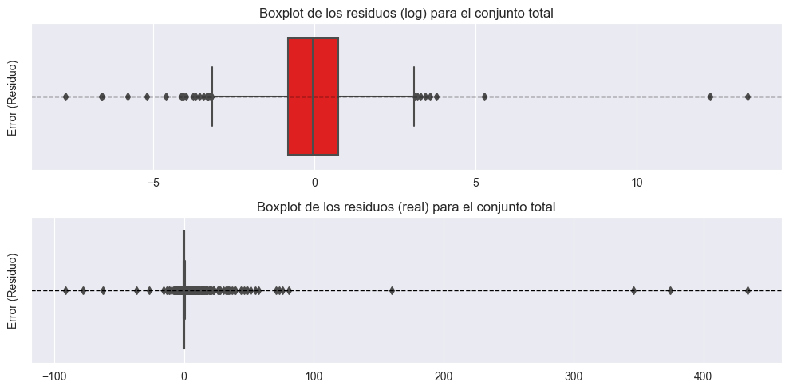
print(ylogpredRANDOM.shape) # Ver el tamaño del array predicho
print(ylogrealRANDOM.shape) # Ver el tamaño del array real
(2643,)
(2643,)
sorted_indices_predRAND= np.argsort(y_predRAND)
y_pred_sortedRAND = y_predRAND[sorted_indices_predRAND] # Reordenar las predicciones según esos índices
plt.figure(figsize=(10,5))
# Graficar datos reales y predichos
plt.plot(y_test_sorted[2:2500], label="Real", marker="o", linestyle="-", color="blue", markersize=0.1, linewidth=1, alpha=0.7)
plt.plot(y_pred_sortedRAND[2:2500], label="Predicho", marker="x", linestyle="--", color="red", markersize=0.1, linewidth=1, alpha=0.7)
plt.legend(["Real", "Predicho"])
plt.grid(True, linestyle='--', alpha=0.6)
plt.tight_layout()
plt.show()
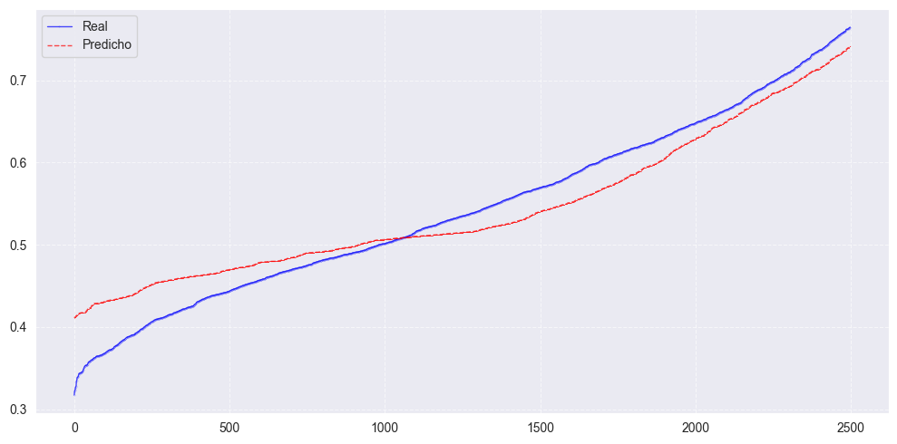
XGBoost#
import xgboost as xgb
from xgboost import XGBRegressor
print(xgb.build_info())
{'BUILTIN_PREFETCH_PRESENT': False, 'CUDA_VERSION': [12, 4], 'DEBUG': False, 'MM_PREFETCH_PRESENT': True, 'THRUST_VERSION': [2, 3, 2], 'USE_CUDA': True, 'USE_DLOPEN_NCCL': False, 'USE_FEDERATED': False, 'USE_NCCL': False, 'USE_OPENMP': True, 'USE_RMM': False, 'libxgboost': 'C:\\Users\\elias\\AppData\\Roaming\\Python\\Python39\\site-packages\\xgboost\\lib\\xgboost.dll'}
X_XGB=df_scaled.copy()
X_XGB['Tectonic environment (Crustal; Inslab; Interface; Stable; Deep; Volcanic; Oceanic_crust)'] = df_copy['Tectonic environment (Crustal; Inslab; Interface; Stable; Deep; Volcanic; Oceanic_crust)']
X_XGB['Fault Plane (1; 2; X)'] = df_copy['Fault Plane (1; 2; X)']
X_XGB['Style-of-Faulting (S; R; N; U)'] = df_copy['Style-of-Faulting (S; R; N; U)']
X_XGB[categorical_columns] = X[categorical_columns].astype('category')
Y_XGB=X_XGB[["T_0.01_RotD50"]].copy()
X_XGB.drop(["T_0.01_RotD50"],axis=1, inplace=True )
XGBRegressor(tree_method='gpu_hist', gpu_id=1)
XGBRegressor(base_score=None, booster=None, callbacks=None,
colsample_bylevel=None, colsample_bynode=None,
colsample_bytree=None, device=None, early_stopping_rounds=None,
enable_categorical=False, eval_metric=None, feature_types=None,
gamma=None, gpu_id=1, grow_policy=None, importance_type=None,
interaction_constraints=None, learning_rate=None, max_bin=None,
max_cat_threshold=None, max_cat_to_onehot=None,
max_delta_step=None, max_depth=None, max_leaves=None,
min_child_weight=None, missing=nan, monotone_constraints=None,
multi_strategy=None, n_estimators=None, n_jobs=None,
num_parallel_tree=None, ...)In a Jupyter environment, please rerun this cell to show the HTML representation or trust the notebook. On GitHub, the HTML representation is unable to render, please try loading this page with nbviewer.org.
XGBRegressor(base_score=None, booster=None, callbacks=None,
colsample_bylevel=None, colsample_bynode=None,
colsample_bytree=None, device=None, early_stopping_rounds=None,
enable_categorical=False, eval_metric=None, feature_types=None,
gamma=None, gpu_id=1, grow_policy=None, importance_type=None,
interaction_constraints=None, learning_rate=None, max_bin=None,
max_cat_threshold=None, max_cat_to_onehot=None,
max_delta_step=None, max_depth=None, max_leaves=None,
min_child_weight=None, missing=nan, monotone_constraints=None,
multi_strategy=None, n_estimators=None, n_jobs=None,
num_parallel_tree=None, ...)X_trainXGB, X_testXGB, y_trainXGB, y_testXGB = train_test_split(X_XGB, Y_XGB, test_size=0.3, random_state=42)
# Modelo con GPU
modelXGB = XGBRegressor(tree_method="gpu_hist", gpu_id=1, enable_categorical=True, n_estimators=1000, max_depth=6, gamma=0,
reg_lambda = 10, reg_alpha= 0.1)
modelXGB.fit(X_trainXGB, y_trainXGB)
# Predicciones
y_predXGB = modelXGB.predict(X_testXGB)
"""from sklearn.model_selection import GridSearchCV
param_gridXGB = {
'gamma': [0, 0.001, 0.01, 0.1],
'reg_lambda': [0.1,1,10,100],
'reg_alpha' : [0.1,1,10,100],
'max_depth' : [6,7,8,9]
}
grid = GridSearchCV(modelXGB, param_gridXGB, scoring='r2', cv=3, n_jobs=7)
grid.fit(X_trainXGB, y_trainXGB)
print("Mejores parámetros:", grid.best_params_)"""
'from sklearn.model_selection import GridSearchCV\n\nparam_gridXGB = {\n \'gamma\': [0, 0.001, 0.01, 0.1],\n \'reg_lambda\': [0.1,1,10,100],\n \'reg_alpha\' : [0.1,1,10,100],\n \'max_depth\' : [6,7,8,9]\n}\n\ngrid = GridSearchCV(modelXGB, param_gridXGB, scoring=\'r2\', cv=3, n_jobs=7)\ngrid.fit(X_trainXGB, y_trainXGB)\n\nprint("Mejores parámetros:", grid.best_params_)'
print("Train set : ",modelXGB.score(X_trainXGB, y_trainXGB))
print("Test set : ",modelXGB.score(X_testXGB, y_testXGB))
Train set : 0.9776307940483093
Test set : 0.8337039947509766
xgb.plot_importance(modelXGB)
plt.show()
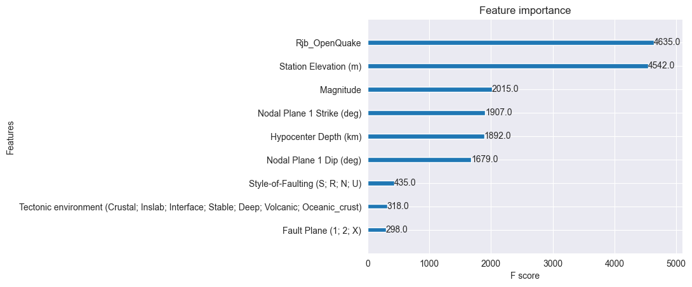
# Conversión directa con np.array()
y_test_array = np.array(y_testXGB['T_0.01_RotD50']) # DataFrame -> Array
y_pred_array = np.array(y_predXGB) # Series -> Array
# Ordenar los valores reales y mantener la relación con los predichos
sorted_indices = np.argsort(y_test_array) # Obtener los índices ordenados de y_test
y_test_sortedXGB = y_test_array[sorted_indices] # Ordenar los valores reales
sorted_indices2 = np.argsort(y_pred_array)
y_pred_sortedXGB = y_pred_array[sorted_indices2] # Reordenar las predicciones según esos índices
"""fig, axs = plt.subplots(4, 1, figsize=(20, 15), sharex=True)
# --- Subplot 1: Datos de 0 a 550 ---
axs[0].plot(y_test_sortedXGB[2:550], label="Real", marker="o", linestyle="-", color="blue", markersize=0.1, linewidth=1)
axs[0].plot(y_pred_sortedXGB[2:550], label="Predicho", marker="x", linestyle="--", color="red", markersize=0.1, linewidth=1)
axs[0].set_ylabel("Valor")
axs[0].set_title("Valores Reales vs. Predichos (0 - 600)")
axs[0].legend()
axs[0].grid()
# --- Subplot 2: Datos de 550 a 1100 ---
axs[1].plot(y_test_sortedXGB[550:1100], label="Real", marker="o", linestyle="-", color="blue", markersize=0.1, linewidth=1)
axs[1].plot(y_pred_sortedXGB[550:1100], label="Predicho", marker="x", linestyle="--", color="red", markersize=0.1, linewidth=1)
axs[1].set_xlabel("Índice")
axs[1].set_ylabel("Valor")
axs[1].set_title("Valores Reales vs. Predichos (600 - 1200)")
axs[1].legend()
axs[1].grid()
# --- Subplot 3: Datos de 1100 a 1650 ---
axs[2].plot(y_test_sortedXGB[1100:1650], label="Real", marker="o", linestyle="-", color="blue", markersize=0.1, linewidth=1)
axs[2].plot(y_pred_sortedXGB[1100:1650], label="Predicho", marker="x", linestyle="--", color="red", markersize=0.1, linewidth=1)
axs[2].set_xlabel("Índice")
axs[2].set_ylabel("Valor")
axs[2].set_title("Valores Reales vs. Predichos (1200 - 1800)")
axs[2].legend()
axs[2].grid()
# --- Subplot 4: Datos de 1650 a 2300 ---
axs[3].plot(y_test_sortedXGB[1650:2300], label="Real", marker="o", linestyle="-", color="blue", markersize=0.1, linewidth=1)
axs[3].plot(y_pred_sortedXGB[1650:2300], label="Predicho", marker="x", linestyle="--", color="red", markersize=0.1, linewidth=1)
axs[3].set_xlabel("Índice")
axs[3].set_ylabel("Valor")
axs[3].set_title("Valores Reales vs. Predichos (1800 - 2400)")
axs[3].legend()
axs[3].grid()
# Ajustar los espacios entre subgráficos automáticamente
plt.tight_layout()
plt.show()"""
'fig, axs = plt.subplots(4, 1, figsize=(20, 15), sharex=True)\n\n# --- Subplot 1: Datos de 0 a 550 ---\naxs[0].plot(y_test_sortedXGB[2:550], label="Real", marker="o", linestyle="-", color="blue", markersize=0.1, linewidth=1)\naxs[0].plot(y_pred_sortedXGB[2:550], label="Predicho", marker="x", linestyle="--", color="red", markersize=0.1, linewidth=1)\naxs[0].set_ylabel("Valor")\naxs[0].set_title("Valores Reales vs. Predichos (0 - 600)")\naxs[0].legend()\naxs[0].grid()\n\n# --- Subplot 2: Datos de 550 a 1100 ---\naxs[1].plot(y_test_sortedXGB[550:1100], label="Real", marker="o", linestyle="-", color="blue", markersize=0.1, linewidth=1)\naxs[1].plot(y_pred_sortedXGB[550:1100], label="Predicho", marker="x", linestyle="--", color="red", markersize=0.1, linewidth=1)\naxs[1].set_xlabel("Índice")\naxs[1].set_ylabel("Valor")\naxs[1].set_title("Valores Reales vs. Predichos (600 - 1200)")\naxs[1].legend()\naxs[1].grid()\n\n# --- Subplot 3: Datos de 1100 a 1650 ---\naxs[2].plot(y_test_sortedXGB[1100:1650], label="Real", marker="o", linestyle="-", color="blue", markersize=0.1, linewidth=1)\naxs[2].plot(y_pred_sortedXGB[1100:1650], label="Predicho", marker="x", linestyle="--", color="red", markersize=0.1, linewidth=1)\naxs[2].set_xlabel("Índice")\naxs[2].set_ylabel("Valor")\naxs[2].set_title("Valores Reales vs. Predichos (1200 - 1800)")\naxs[2].legend()\naxs[2].grid()\n\n# --- Subplot 4: Datos de 1650 a 2300 ---\naxs[3].plot(y_test_sortedXGB[1650:2300], label="Real", marker="o", linestyle="-", color="blue", markersize=0.1, linewidth=1)\naxs[3].plot(y_pred_sortedXGB[1650:2300], label="Predicho", marker="x", linestyle="--", color="red", markersize=0.1, linewidth=1)\naxs[3].set_xlabel("Índice")\naxs[3].set_ylabel("Valor")\naxs[3].set_title("Valores Reales vs. Predichos (1800 - 2400)")\naxs[3].legend()\naxs[3].grid()\n\n# Ajustar los espacios entre subgráficos automáticamente\nplt.tight_layout()\nplt.show()'
plt.figure(figsize=(10,5))
# Graficar datos reales y predichos
plt.plot(y_test_sortedXGB[2:2500], label="Real", marker="o", linestyle="-", color="blue", markersize=0.1, linewidth=1, alpha=0.7)
plt.plot(y_pred_sortedXGB[2:2500], label="Predicho", marker="x", linestyle="--", color="red", markersize=0.1, linewidth=1, alpha=0.7)
plt.legend(["Real", "Predicho"])
plt.grid(True, linestyle='--', alpha=0.6)
plt.tight_layout()
plt.show()
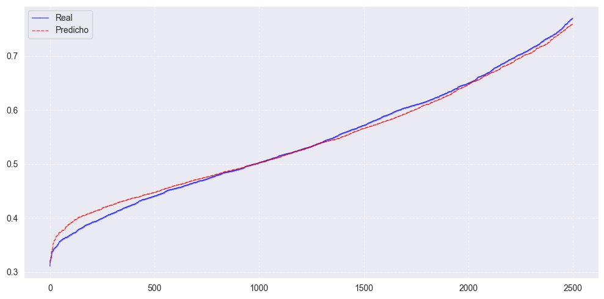
SVM#
from sklearn.svm import SVR
from sklearn.metrics import mean_squared_error
"""from sklearn.model_selection import GridSearchCV
param_grid = {'C': np.logspace(-3, 3, 7)}
grid_search = GridSearchCV(SVR(kernel='rbf'), param_grid, cv=5, scoring='neg_mean_squared_error')
grid_search.fit(X_train, y_train)
print("Mejor C:", grid_search.best_params_['C'])
"""
'from sklearn.model_selection import GridSearchCV\n\nparam_grid = {\'C\': np.logspace(-3, 3, 7)} \n\ngrid_search = GridSearchCV(SVR(kernel=\'rbf\'), param_grid, cv=5, scoring=\'neg_mean_squared_error\')\ngrid_search.fit(X_train, y_train)\n\nprint("Mejor C:", grid_search.best_params_[\'C\'])\n'
svr_lineal = SVR(kernel='linear', C=1, epsilon=0.1)
svr_lineal.fit(X_train,y_train)
SVR(C=1, kernel='linear')In a Jupyter environment, please rerun this cell to show the HTML representation or trust the notebook.
On GitHub, the HTML representation is unable to render, please try loading this page with nbviewer.org.
SVR(C=1, kernel='linear')
svr_poly = SVR(kernel='poly', C=1.0, epsilon=0.1)
svr_poly.fit(X_train,y_train)
SVR(kernel='poly')In a Jupyter environment, please rerun this cell to show the HTML representation or trust the notebook.
On GitHub, the HTML representation is unable to render, please try loading this page with nbviewer.org.
SVR(kernel='poly')
svr_rbf = SVR(kernel='rbf', C=10, epsilon=0.1)
svr_rbf.fit(X_train,y_train)
SVR(C=10)In a Jupyter environment, please rerun this cell to show the HTML representation or trust the notebook.
On GitHub, the HTML representation is unable to render, please try loading this page with nbviewer.org.
SVR(C=10)
y_pred_svm= svr_rbf.predict(X_test)
print("Puntaje entrenamiento para svm con kernel lineal:" ,svr_lineal.score(X_train, y_train))
print("Puntaje test para svm con kernel lineal:" ,svr_lineal.score(X_test, y_test))
print("Puntaje entrenamiento para svm con kernel poly:" ,svr_poly.score(X_train, y_train))
print("Puntaje test para svm con kernel poly:" ,svr_poly.score(X_test, y_test))
print("Puntaje entrenamiento para svm con kernel rbf:" ,svr_rbf.score(X_train, y_train))
print("Puntaje test para svm con kernel rbf:" ,svr_rbf.score(X_test, y_test))
Puntaje entrenamiento para svm con kernel lineal: 0.5118653186082465
Puntaje test para svm con kernel lineal: 0.4764301720694918
Puntaje entrenamiento para svm con kernel poly: 0.6565885999244516
Puntaje test para svm con kernel poly: 0.6353856191488072
Puntaje entrenamiento para svm con kernel rbf: 0.6723342278925559
Puntaje test para svm con kernel rbf: 0.6418017784080997
sorted_indices_predSVM= np.argsort(y_pred_svm)
y_pred_sortedSVM = y_pred_svm[sorted_indices_predSVM] # Reordenar las predicciones según esos índices
plt.figure(figsize=(10,5))
# Graficar datos reales y predichos
plt.plot(y_test_sorted[2:2500], label="Real", marker="o", linestyle="-", color="blue", markersize=0.1, linewidth=1, alpha=0.7)
plt.plot(y_pred_sortedSVM[2:2500], label="Predicho", marker="x", linestyle="--", color="red", markersize=0.1, linewidth=1, alpha=0.7)
plt.legend(["Real", "Predicho"])
plt.grid(True, linestyle='--', alpha=0.6)
plt.tight_layout()
plt.show()
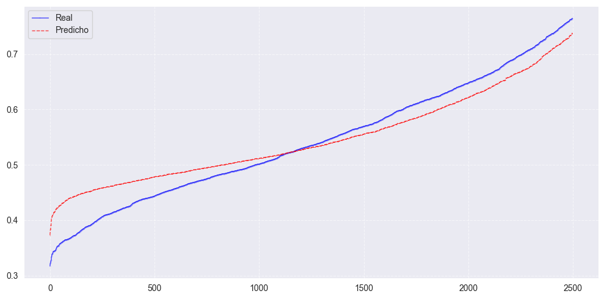
Tabla de métricas#
import pandas as pd
import numpy as np
from sklearn.metrics import mean_absolute_percentage_error, mean_squared_error, r2_score
from scipy.stats import jarque_bera
from statsmodels.stats.diagnostic import acorr_ljungbox
epsilon = 1e-6 # Pequeño valor para evitar divisiones por cero
#MAPE
mape_knn = mean_absolute_percentage_error(np.maximum(y_test, epsilon), y_pred_knn) * 100
mape_regl = mean_absolute_percentage_error(np.maximum(y_test, epsilon), y_pred_reglineal) * 100
mape_ridge = mean_absolute_percentage_error(np.maximum(y_test, epsilon), y_pred_Ridge) * 100
mape_lasso = mean_absolute_percentage_error(np.maximum(y_test, epsilon), y_pred_Lasso) * 100
mape_rand = mean_absolute_percentage_error(np.maximum(y_test, epsilon), y_predRAND) * 100
mape_xgb = mean_absolute_percentage_error(np.maximum(y_test, epsilon), y_predXGB) * 100
mape_svm = mean_absolute_percentage_error(np.maximum(y_test, epsilon), y_pred_svm) * 100
#RMSE
rmse_knn = np.sqrt(mean_squared_error(y_test, y_pred_knn)) # RMSE
rmse_regl = np.sqrt(mean_squared_error(y_test, y_pred_reglineal))
rmse_ridge = np.sqrt(mean_squared_error(y_test, y_pred_Ridge))
rmse_lasso = np.sqrt(mean_squared_error(y_test, y_pred_Lasso))
rmse_rand = np.sqrt(mean_squared_error(y_test, y_predRAND))
rmse_xgb = np.sqrt(mean_squared_error(y_test, y_predXGB))
rmse_svm = np.sqrt(mean_squared_error(y_test, y_pred_svm))
#R2
r2_knn = r2_score(y_test, y_pred_knn) # R²
r2_regl = r2_score(y_test, y_pred_reglineal) # R²
r2_ridge = r2_score(y_test, y_pred_Ridge) # R²
r2_lasso = r2_score(y_test, y_pred_Lasso) # R²
r2_rand = r2_score(y_test, y_predRAND) # R²
r2_xgb = r2_score(y_testXGB, y_predXGB)
r2_svm = r2_score(y_test, y_pred_svm) # R²
# Calcular Ljung-Box (test de autocorrelación de residuos)
residuos_knn = y_test - y_pred_knn
ljung_box_knn = acorr_ljungbox(residuos_knn, lags=1, return_df=True)['lb_pvalue'].iloc[0] # p-value
residuos_regl = y_test - y_pred_reglineal
ljung_box_regl = acorr_ljungbox(residuos_regl, lags=1, return_df=True)['lb_pvalue'].iloc[0] # p-value
residuos_ridge = y_test - y_pred_Ridge
ljung_box_ridge = acorr_ljungbox(residuos_ridge, lags=1, return_df=True)['lb_pvalue'].iloc[0] # p-value
residuos_lasso = y_test - y_pred_Lasso
ljung_box_lasso = acorr_ljungbox(residuos_lasso, lags=1, return_df=True)['lb_pvalue'].iloc[0] # p-value
residuos_rand = y_test - y_predRAND
ljung_box_rand = acorr_ljungbox(residuos_rand, lags=1, return_df=True)['lb_pvalue'].iloc[0] # p-value
residuos_xgb = y_test - y_predXGB
ljung_box_xgb = acorr_ljungbox(residuos_xgb, lags=1, return_df=True)['lb_pvalue'].iloc[0] # p-value
residuos_svm = y_test - y_pred_svm
ljung_box_svm = acorr_ljungbox(residuos_svm, lags=1, return_df=True)['lb_pvalue'].iloc[0] # p-value
# Calcular Jarque-Bera (test de normalidad de residuos)
jb_test_knn = jarque_bera(residuos_knn)
jarque_bera_knn = jb_test_knn.pvalue # p-value
jb_test_regl = jarque_bera(residuos_regl)
jarque_bera_regl = jb_test_regl.pvalue
jb_test_ridge = jarque_bera(residuos_ridge)
jarque_bera_ridge = jb_test_ridge.pvalue
jb_test_lasso = jarque_bera(residuos_lasso)
jarque_bera_lasso = jb_test_lasso.pvalue
jb_test_rand = jarque_bera(residuos_rand)
jarque_bera_rand = jb_test_rand.pvalue
jb_test_xgb = jarque_bera(residuos_xgb)
jarque_bera_xgb = jb_test_xgb.pvalue
jb_test_svm = jarque_bera(residuos_svm)
jarque_bera_svm = jb_test_svm.pvalue
tabla_resultados = pd.DataFrame({
'Modelo': ['K-NN','Regresión Lineal','Regresión Ridge','Regresión Lasso','Random Forest','XGBoost','SVM'],
'MAPE (%)': [mape_knn, mape_regl, mape_ridge, mape_lasso, mape_rand, mape_xgb, mape_svm],
'RMSE': [rmse_knn, rmse_regl, rmse_ridge, rmse_lasso, rmse_rand, rmse_xgb, rmse_svm],
'R²': [r2_knn, r2_regl, r2_ridge, r2_lasso, r2_rand, r2_xgb, r2_svm],
'Ljung-Box p-value': [ljung_box_knn, ljung_box_regl, ljung_box_ridge, ljung_box_lasso, ljung_box_rand, ljung_box_xgb, ljung_box_svm],
'Jarque-Bera p-value': [jarque_bera_knn, jarque_bera_regl, jarque_bera_ridge, jarque_bera_lasso, jarque_bera_rand, jarque_bera_xgb, jarque_bera_svm]
})
tabla_resultados
| Modelo | MAPE (%) | RMSE | R² | Ljung-Box p-value | Jarque-Bera p-value | |
|---|---|---|---|---|---|---|
| 0 | K-NN | 11.386204 | 0.076226 | 0.609690 | 0.084624 | 0.000000e+00 |
| 1 | Regresión Lineal | 13.160224 | 0.085645 | 0.507270 | 0.041566 | 2.386578e-114 |
| 2 | Regresión Ridge | 13.628344 | 0.088119 | 0.478396 | 0.024577 | 5.128665e-100 |
| 3 | Regresión Lasso | 13.717536 | 0.088421 | 0.474819 | 0.018071 | 4.150515e-72 |
| 4 | Random Forest | 10.099874 | 0.065922 | 0.708086 | 0.374587 | 0.000000e+00 |
| 5 | XGBoost | 25.171569 | 0.165248 | 0.833704 | 0.856885 | 4.856035e-03 |
| 6 | SVM | 11.207120 | 0.073023 | 0.641802 | 0.333471 | 0.000000e+00 |
import matplotlib.pyplot as plt
import seaborn as sns
from statsmodels.graphics.tsaplots import plot_acf
modelos = {
"K-NN": residuos_knn,
"Regresión Lineal": residuos_regl,
"Regresión Ridge": residuos_ridge,
"Regresión Lasso": residuos_lasso,
"Random Forest": residuos_rand,
"XGBoost": residuos_xgb,
"SVM": residuos_svm
}
fig, axes = plt.subplots(len(modelos), 2, figsize=(12, 4 * len(modelos)))
for i, (nombre, residuos) in enumerate(modelos.items()):
# ACF de los residuos
plot_acf(residuos, ax=axes[i, 0], title=f"ACF - {nombre}")
axes[i,0].set_ylim(-0.2, 0.2) # Límite en el eje y
# Histograma de los residuos
sns.histplot(residuos, bins=20, kde=True, ax=axes[i, 1])
axes[i, 1].set_title(f"Histograma de Residuos - {nombre}")
plt.tight_layout()
plt.show()
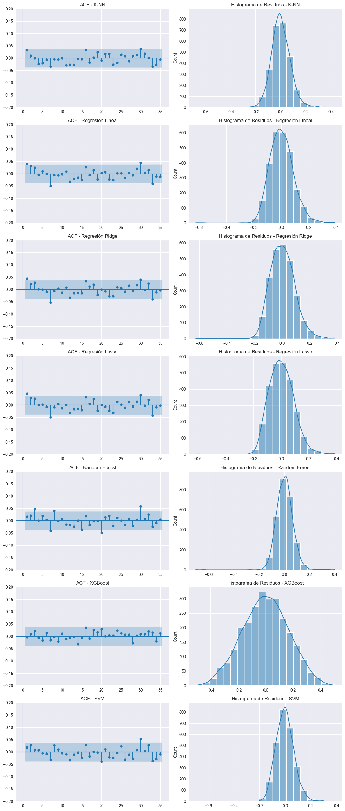